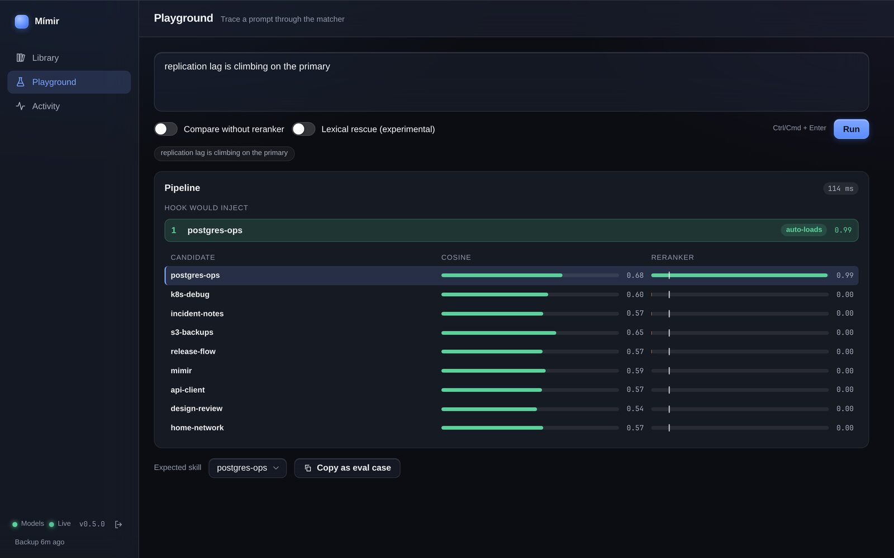
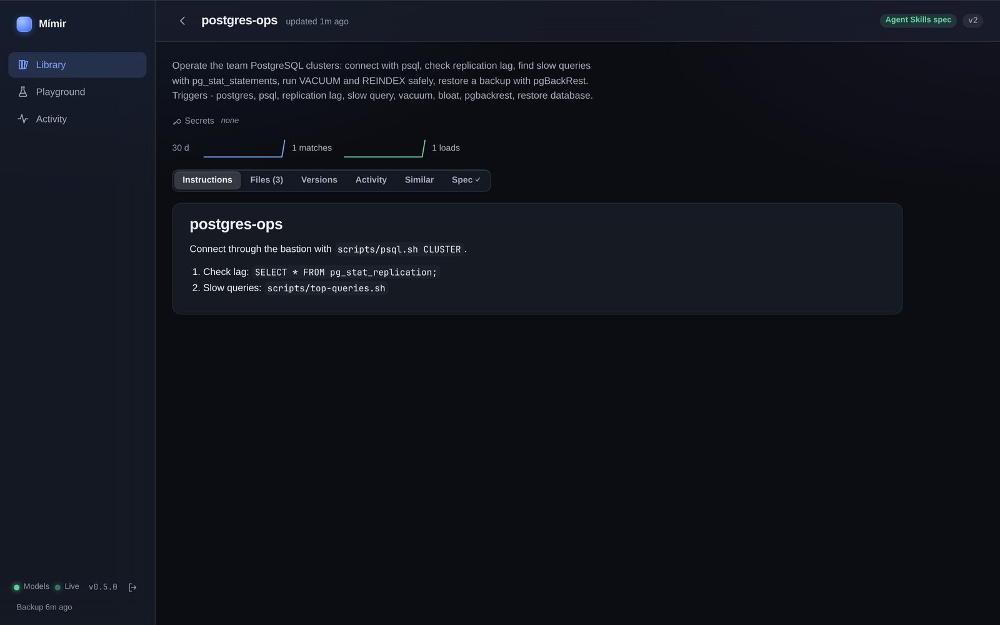

The reranker scores every skill for each prompt
An embedding model shortlists twelve skills and a reranker judges whether each one would help.
Mímir keeps your Agent Skills on one server and gives Claude Code or Codex the right one for each prompt, matched by meaning in about 150 ms.

Instructions, scripts, reference files and secrets live in one SQLite database instead of a skills folder copied to every laptop.

An embedding model shortlists twelve skills and a reranker judges whether each one would help.
A prompt hook adds the matches; above 0.9 it loads the whole skill once per session.
# ~/.claude/settings.json "UserPromptSubmit": [{ "hooks": [ { "type": "command", "command": "mimir hook" } ] }] # injected into the conversation Mímir loaded skill `release-flow` for this prompt (best match). It is already loaded: follow it, no need to call skill_get. Its files are in /home/you/.cache/mimir/skills/release-flow.
Prompts that need no skill get none. On a 140-prompt test set, none of the 35 got a false match.
$ mimir eval cases.tsv == embed + rerank (140 cases, 35 accept none) recall@1 0.89 recall@3 0.97 latency p50 158 ms p95 229 ms min 0.1 decide-acc 0.90 false-alarm 0
The hook gives up after 2.5 seconds, and loaded skills are cached for when the server is away.
$ mimir doctor ✓ server http://server:7440 reachable, version 0.5.0 matches the client ✓ token accepted (9 skills) ✓ embedding model embeddinggemma-2-Q8_0 answers /v1/embeddings ✓ reranking model qwen3-reranker-0.6b-q8_0 answers /v1/rerank ✓ embeddings match the configured model ✓ last backup 3 h ago ✓ Claude hook in ~/.claude/settings.json ✓ Claude MCP server registered ✓ Codex hook in ~/.codex/hooks.json ✓ Codex MCP server in ~/.codex/config.toml
MIT licence. Use it, fork it, change it and ship it. Issues and pull requests are welcome.
See the source on GitHubA static binary for x86_64 Linux, with SQLite and the web UI built in. To build from source instead, see the README.
A systemd user service on port 7440, with a new random token.
$ curl -LO https://github.com/olibuijr/mimir/releases/latest/download/mimir-x86_64-linux.tar.gz $ tar xzf mimir-x86_64-linux.tar.gz $ cd mimir-x86_64-linux && ./install.sh
EmbeddingGemma and Qwen3-Reranker, served by llama.cpp. Embeddings are expected on :8084; tell Mímir where the reranker is.
$ llama-server -hf ggml-org/embeddinggemma-300M-GGUF --embeddings --port 8084 $ llama-server -hf ggml-org/Qwen3-Reranker-0.6B-Q8_0-GGUF --reranking --port 8085 $ echo MIMIR_RERANK_URL=http://127.0.0.1:8085 >> ~/.config/mimir/env $ systemctl --user restart mimir
Adds the hook and MCP server to Claude Code and Codex.
$ MIMIR_URL=http://server:7440 ./client.sh $ mimir import ~/.claude/skills/* # web UI: http://server:7440
Agents search, load and save skills through four MCP tools, or the CLI with --json. Mímir also ships a skill that teaches agents to write new skills that pass the spec and to fix a broken setup.
skill_searchFind skills for what the agent is about to doskill_getLoad one, with its scripts and secrets installedskill_listEvery skill with its descriptionskill_saveCreate or update a skill, checked against the spec$ mimir --json search "ship 2.4.1 to production" -k 1 {"hits":[{"name":"release-flow","description":"Cut a release of ...","score":0.92,"cosine":0.71}],"ms":118,"reranked":true} $ mimir new nightly-report -d "Build the nightly ..." created ./nightly-report/SKILL.md fill in the TODOs, then: mimir validate ./nightly-report && mimir import ./nightly-report $ mimir import nightly-report nightly-report v1 0 files, 0 KB, 0 secrets $ mimir --json doctor {"archive_commands":[],"checks":[...],"ok":true,"version":"0.5.0"}
Claude Code and Codex through the prompt hook and MCP. Any agent that speaks MCP or can run a command can search and load skills.
No. Matching runs on your server with local models. Prompts are logged for 30 days so you can see why a skill did or did not match.
A skill's .env is stored on the server and written to the machine, mode 600, when the skill is loaded. The web UI never shows secret values.
The two models are about 1 GB together and run on a CPU; on a GPU a match takes about 150 ms.
$ mimir validate release-flow
release-flow
error: unexpected field `owner`: the spec allows only name, description, license, compatibility, metadata, allowed-tools; put extra data under `metadata`
warn: SKILL.md refers to `scripts/release.sh`, which is not in the skill
1 skills: 0 valid (0 with warnings), 1 invalidSkills follow the open Agent Skills format, so mimir export writes plain folders any agent can read.